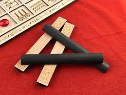

This page is all about dice and how they are made. We are going to go in depth on the process.
Dice have been used long before history was able to record it, not only that but it is uncertain what the origin of dice is. Back in ancient egyptian times there was a game known as Senet, where they would throw a flat two sided stick which indicated a number of squares a player could move. Although in ancient rome gambling was illegal many romans were passionate gamblers who enjoyed dicing.
